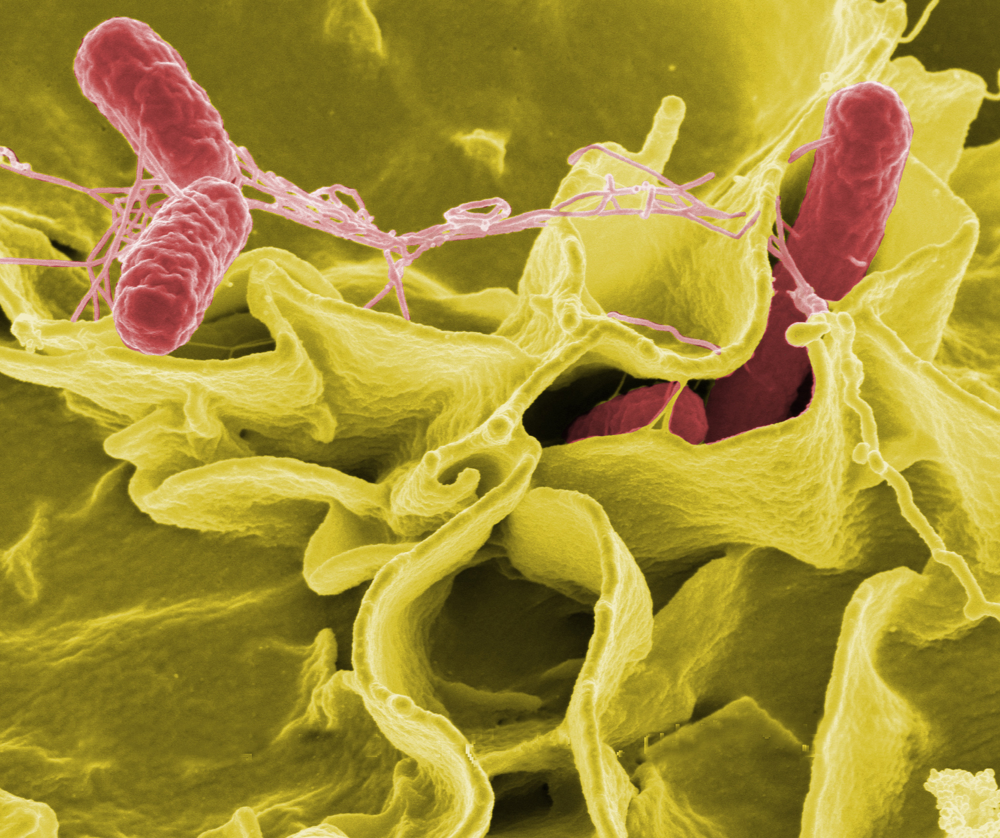

Información general sobre la salmonella
Imagen
Descripción
La salmonelosis es una infección intestinal causada por bacterias del género Salmonella. Es una de las enfermedades transmitidas por alimentos más comunes en todo el mundo. Afecta principalmente el tracto gastrointestinal y puede provocar síntomas desde leves hasta graves, especialmente en niños, ancianos y personas inmunodeprimidas.
Causas
- Ingestión de alimentos contaminados (huevos crudos, carne poco cocida, productos lácteos sin pasteurizar)
- Consumo de agua contaminada
- Contacto con animales portadores (reptiles, aves, ganado)
- Falta de higiene en la manipulación de alimentos
Síntomas
Los síntomas suelen aparecer entre 6 y 72 horas después de la exposición:
- Diarrea (a veces con sangre)
- Fiebre
- Dolor abdominal
- Vómitos
- Malestar general
- Deshidratación en casos graves
Tratamiento
Aunque la mayoría de los casos se resuelven sin complicaciones, el tratamiento busca aliviar los síntomas y prevenir la deshidratación:
- Reposo
- Hidratación oral o intravenosa
- Alimentación suave y progresiva
- Antibióticos solo en casos graves o en pacientes vulnerables, bajo supervisión médica